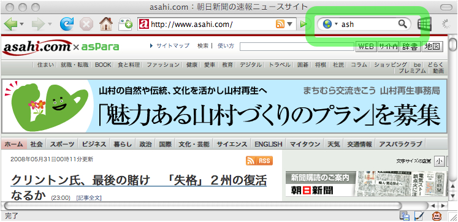
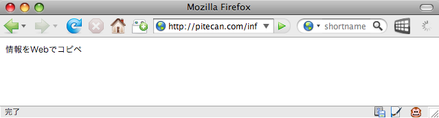

このような問題を解決するひとつの方法として、 del.icio.usや はてなブックマーク のような、Web上でブックマークを共有する ソーシャルブックマークサービスが最近よく使われています。 Web上のブックマークにはあらゆる場所からアクセスすることができますし、 ブックマーク数によってサイトの人気がわかるというメリットもあるので、 多くのユーザに活用されているようです。
情報共有という意味ではソーシャルブックマークは大変便利なものですが、 ブラウザのブックマーク機能の代替としては最適とはいえません。 こっそり閲覧したいサイトや非公開サイトは登録するわけにいきませんし、 登録ずみのサイトを表示するのに多少手間がかかります。 ソーシャルブックマークサービスでは 各ブックマークにキーワード(タグ)を登録することを推奨していますが、 よく使うサイトをいちいちキーワードで検索するのは面倒です。
TinyURLでは6文字の英数字が識別名として利用されていますが、
ひとりで利用する場合はもっと短い名前で充分です。
たとえば
朝日新聞のサイトを利用したいとき、
このURLを私のサイト上で“ash”という3文字の名前で登録しておけば
http://pitecan.com/ash
というURLで朝日新聞にジャンプできます。
英文字1文字だと26個しかブックマークすることができませんが、
英数字3文字を利用すれば26×36×36個のURLを区別できますから
個人的に利用する場合は充分でしょう。
また、この機能をFirefoxの右上の検索窓に登録することにより、
Firefox上で“ash”と入力すればすぐに
朝日新聞のサイトにジャンプできるようにしています。
“xxx”という名前でURLを登録したいときは
http://pitecan.com/xxx
にアクセスすると登録画面が表示されるようになっています。

map”という名前で登録しておけば、
http://pitecan.com/map
という名前で地図にアクセスすることができます。
どこかにでかけるときは必ずこの名前で地図URLを登録するようにしておけば、
いつでも同じ名前で必要な地図にアクセスすることができることになります。
3文字ブックマークは
URLをWeb上でコピペできるようにしたものだと考えることもできます。
普通のコピペでは
コピーバッファはひとつしかありませんから名前をつける必要がありませんが、
この場合は3文字の名前で区別することができます。
URLを登録するかわりに
「情報をWebでコピペ」という文字列を
“inf”
という名前で登録すれば、
http://pitecan.com/inf
にアクセスすればこの情報を読むことができます。
異なるマシン間で文字列をコピペするのに便利です。

3文字ブックマークやコピペの機能は数年前に作ったものですが、 私は毎日かなりの頻度で利用しています。 現在は私がひとりで利用していますが、 誰でも使えるようになっていれば便利でしょう。 最近は「Web2.0」的な情報共有サービスが大流行していますが、 個人的にWebを活用する小技もまだまだありそうです。